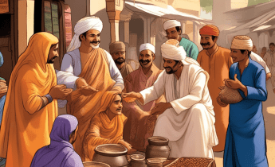

 Teori Gujarat
“Menguak Misteri Penyebaran Islam dari Pelabuhan Gujarat”
Teori Gujarat, diajukan oleh ilmuwan Belanda J. Pijnapel dan didukung oleh
Christiaan Snouck Hurgronje, menyatakan bahwa agama Islam dan
kebudayaannya diperkenalkan ke Nusantara oleh para pedagang yang berasal
dari Gujarat, India, dan menyeberangi selat Malaka. Menurut teori ini,
penyebaran Islam secara besar-besaran terjadi di kepulauan Nusantara sekitar
abad ke-13 Masehi melalui interaksi intensif antara pedagang dari Gujarat dan
kerajaan Samudera Pasai yang mengendalikan jalur perdagangan selat Malaka
pada periode tersebut.
S. Hurgronje mendukung Teori Gujarat dengan merujuk pada hubungan
perdagangan yang erat antara Indonesia dan India. Argumennya diperkuat
oleh penemuan makam Sultan Samudera Pasai, Malik As-Saleh, pada tahun
1297, dan makam Maulana Malik Ibrahim, keduanya menampilkan corak seni
Gujarat, bersama dengan tulisan Marco Polo. Meski demikian, kelemahan teori
ini disoroti oleh G.E. Morison, seorang jurnalis Australia, yang meragukan
bahwa Islam dapat langsung berasal dari Gujarat hanya berdasarkan
kesamaan corak batu nisan. Morison juga mencatat bahwa pada awal abad
ke-12 Masehi, masyarakat Gujarat masih menganut agama Hindu.
Perdebatan antara pendukung dan penentang Teori Gujarat memunculkan
pertanyaan tentang kompleksitas sejarah penyebaran Islam di Nusantara,
mengaitkan aspek perdagangan, budaya, dan agama dalam perkembangan
wilayah ini. Meskipun teori ini memberikan wawasan tentang asal-usul Islam di
Indonesia, tetapi perlu mempertimbangkan berbagai perspektif dan bukti
untuk mendapatkan pemahaman yang lebih komprehensif tentang peran
Gujarat dalam membentuk sejarah Nusantara.